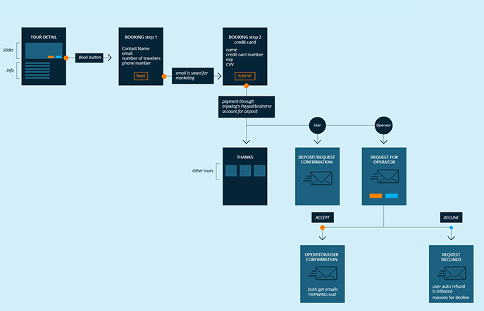
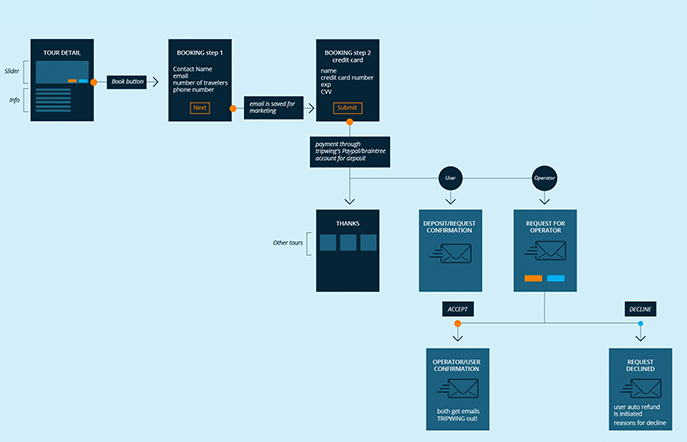

Product
Tours Marketplace
Role
UX/UI Designer
Skills
UX, UI, User Flow, Wireframes, Prototype
Tripwing is marketplace for tours, they wanted a product were you can find and compare several tours from verified operators.
Tours are different from regular travels, you need to do a lot of research to find the best experience on each destination and it’s a hustle to create an itinerary. Use an operator solve this problem but creates others, how to find a reliable operator and how to compare between the different products that they offer.
Tours usually take several days and are more expensive but the client is ok paying more to avoid the hustle of creating itineraries and all the research behind. Our main target for the launch were middle age executives and their assistants.
My role was UX design, I was part of a small remote team that included a UX lead and a project manager. We worked closely with the CEO of the company, and had scrum meetings on a regular basis.
A constraint of this project is that the info from the operators was already created, we didn’t have the chance to propose improvements.
Our first task was to find what products are already on the market that offers something similar to Tripwing, we found a couple but these were a bit more limited with the offer of the tours or really going to the luxury market.
We wanted something more approachable and easier to use.
 

I think the user flow is a crucial step on any UX process, here you can easily identify the steps required to perform an action also gives you a visual map of your product.
I like to do the user flow with these mini-wireframes in this way you can see how many steps you will need to complete a goal and what are the most relevant actions on each one.
Something important we discover on this step was that a big percentage of our traffic was expected to come from organic search, landing directly on the tour detail page or on a city category page so these pages needed to work as detail pages but also like landing pages.
The wireframes needed to be detailed, in this way the developers could start to work once they were approved and just update later when the UI is finished we also did some prototypes with wireframes to show how a complete user flow could work.
We decided to design a clean and simple ui, but we wanted to avoid something cold and distant instead we tried something more friendly and approachable. The calid tones on the website help us to transmit those emotions.
For this project we did prototypes with wireframes and later with the complete UI, for each individual flow using Invision or short videos with After Effects, these where really useful to show the advances to the stakeholders and to explain to the developers how each interaction should work.
Detail pages can be really long, some tours can have information from 3 to 40 days of travel, we wanted to avoid the basic information to be lost on the top so is fixed on the side and always visible.
On tours dates are not so flexible like on regular travel, our calendar works as a discovery tool, showing on what dates is this tour available and showing the duration on hover.
As UX designer is pretty common to work on existing products, adding new features or improving user flows so when you have the opportunity to participate on the whole process from idea to final product is always a great learning experience.
Before this project I already had some experience working on travel related services but tours are different enough to explore new ideas that could not work on other products.
 oswaldo.vazquez
oswaldo.vazquez
 oswaldo.vazquez@gmail.com
oswaldo.vazquez@gmail.com